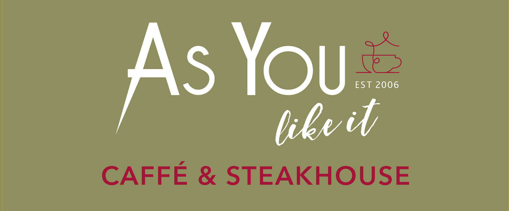
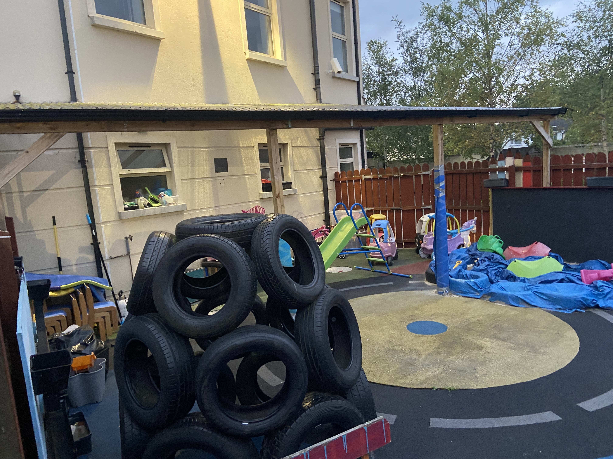

The Venue offers Two Additional Services. A Restaurant by the name of As You Like It. And a Playschool called Happy Days.
As You Like It Restaurant

As You Like It is open til 4pm everyday. It serves breakfast, lunch and dinner everyday with an array of items to choose from. It is located on the ground floor of the Venue and very easily accessible. The restaurant has excellent reviews on their staff and food alike.

Happy Days is located at the back of the Venue. Happy Days has a ramp located just in front of the entrance for east access and disability parking close to it. It has many ammenities for the children and the staff have very good reviews.